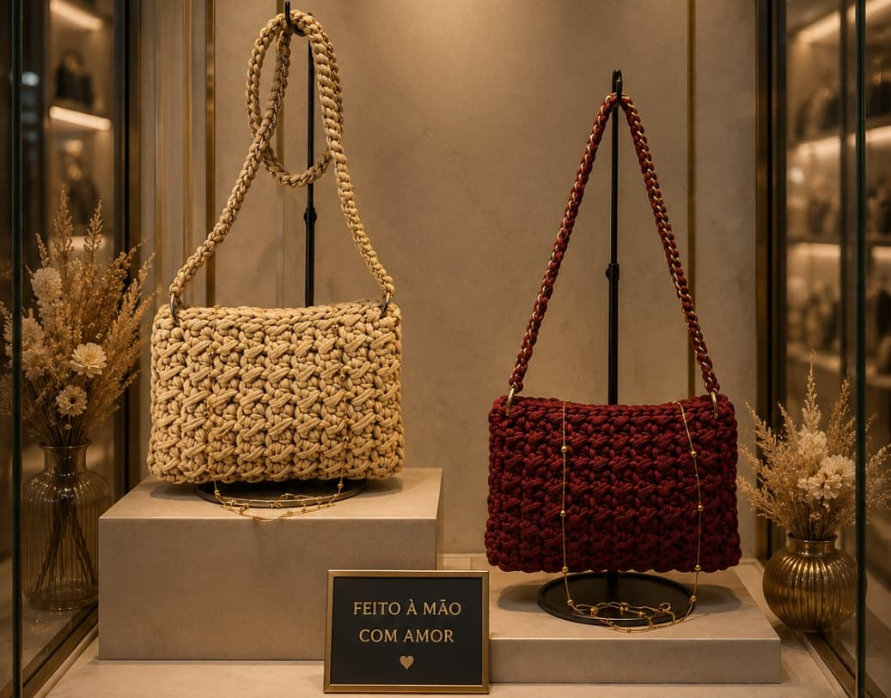
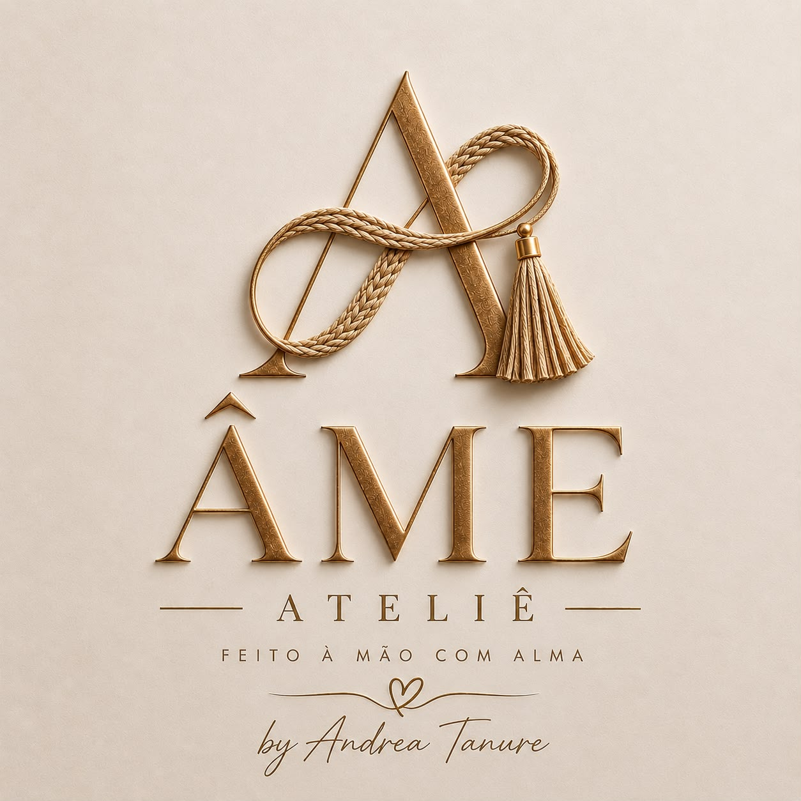

Peças autorais criadas à mão por Andrea Tanure, em Minas Gerais. Cada bolsa é única — pensada, tecida e finalizada uma de cada vez.
Cada bolsa nasce de um novelo de linha e de muitas horas de trabalho manual.
Não existem duas peças exatamente iguais — as cores e os acabamentos variam conforme a linha disponível no momento da confecção.
Um recorte de algumas das coleções já criadas por Andrea. As fotos são reais; tamanhos e cores podem variar.
Toque em qualquer foto para nos perguntar sobre algum modelo pelo WhatsApp.
Não encontrou o que procurava? Fale direto no WhatsApp — Também temos outras peças disponíveis além das fotos aqui.
Do novelo à peça pronta — o processo por trás de cada bolsa, feito à mão e sem pressa.
Todas as linhas são selecionadas com calma antes de qualquer ponto ser feito.
Cada peça é confeccionada em crochê, ponto a ponto, uma de cada vez.
É aqui onde a estrutura e os detalhes finais são adicionados.
Cada bolsa é revisada com atenção aos detalhes antes de estar realmente pronta.
Navegue pela coleção e separe a bolsa (ou as bolsas) que mais combinam com você.
Envie uma mensagem nos mostrando o modelo escolhido e tire suas dúvidas sobre cor, tamanho e prazo.
Quando sua bolsa ficar pronta, você vem buscar diretamente com a autora.

Andrea Tanure transforma novelos de linha em bolsas autorais, feitas à mão, uma peça de cada vez, com muita atenção ao menor dos detalhes.
Cada bolsa é feita sob medida de atenção: da escolha da linha ao último ponto do acabamento. Acompanhe o processo e os lançamentos no Instagram.
Não achou sua dúvida aqui? Pergunte direto pelo WhatsApp.
O prazo varia de acordo com o modelo escolhido e a fila de encomendas no momento. Fale conosco pelo WhatsApp para confirmar o prazo da sua peça.
Sim. As cores dependem da linha disponível no momento da confecção — combine as opções diretamente conosco antes de fechar o pedido.
Não, muitas peças partem de modelos já criados.
As formas de pagamento são combinadas diretamente com a gente no momento da encomenda, pelo WhatsApp.
Não, infelizmente no momento não estamos realizando entregas fora da cidade.
Por ser uma peça artesanal, recomenda-se lavagem delicada à mão e secagem à sombra.
Fale com a gente pelo WhatsApp ou pelo Instagram para escolher modelo, cor e entrega.